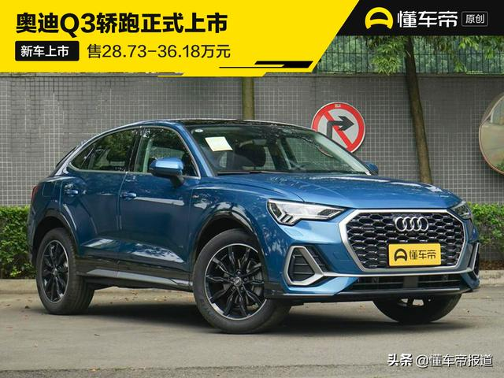
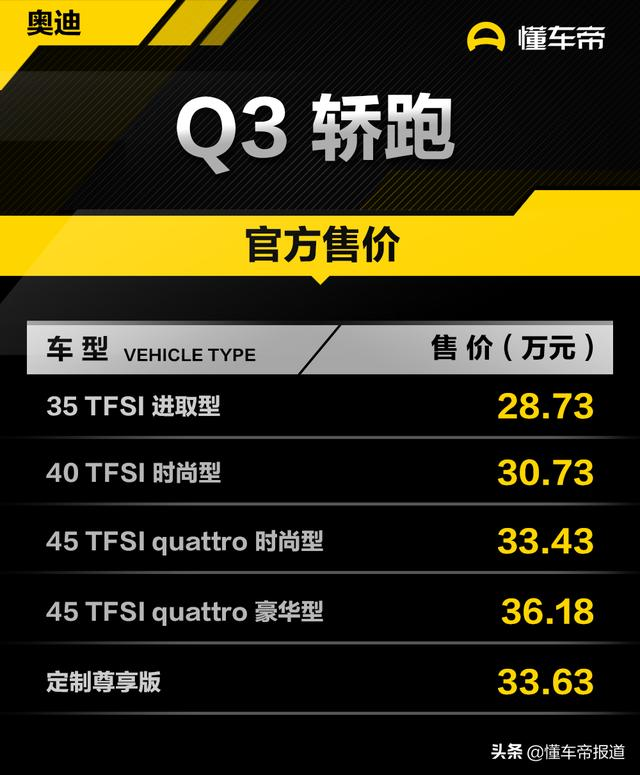
Sportback已由一汽-大众奥迪国产，并采用“奥迪Q3轿跑”的命名，该车是奥迪在国内推出的首款紧凑型跨界轿跑SUV，可以看作是奥迪Q3的补充车款。5月29日晚，奥迪Q3轿跑正式上市，推出5款车型，售28.73-36.18万元。新车整体延续了奥迪Q3的设计，最大的亮点是采用了掀背式车身造型。
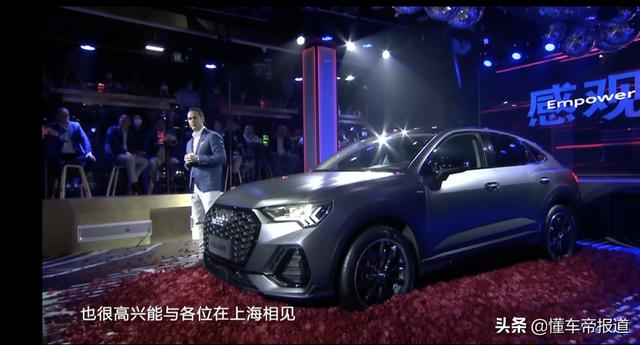
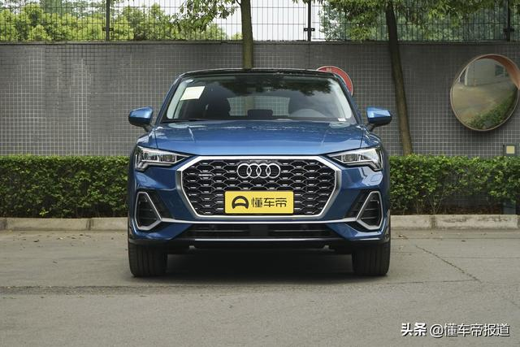
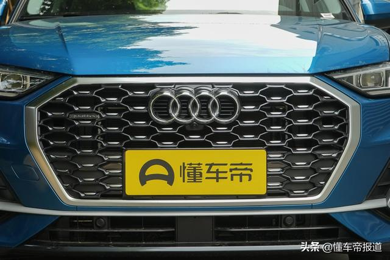
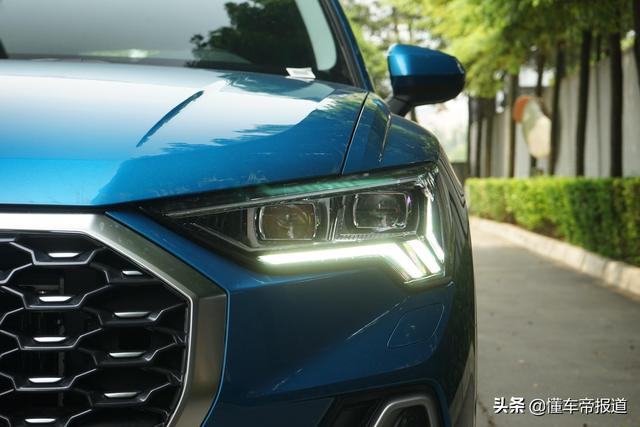
奥迪Q3轿跑车头造型设计与现款奥迪Q3基本一致，不过细节处有所不同。Q3轿跑采用网状格栅，两侧的装饰也采用了熏黑处理，智能矩阵式LED大灯的造型与现款奥迪Q3相同，并且拥有动态转向灯效果及自适应调节功能。前翼子板及后侧围空气导流件应用更精进的冲压技术，保证视觉上的锐度。
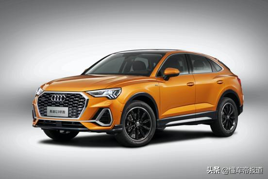
奥迪Q3轿跑共提供11种外部车身颜色，新增环礁蓝。同时提供18英寸/19英寸两种尺寸铝合金轮辋，含有7种不同对比色/纯色供选择。奥迪Q3轿跑标配S-line外观套件，全系提供黑光包选装。
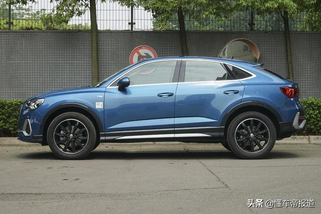
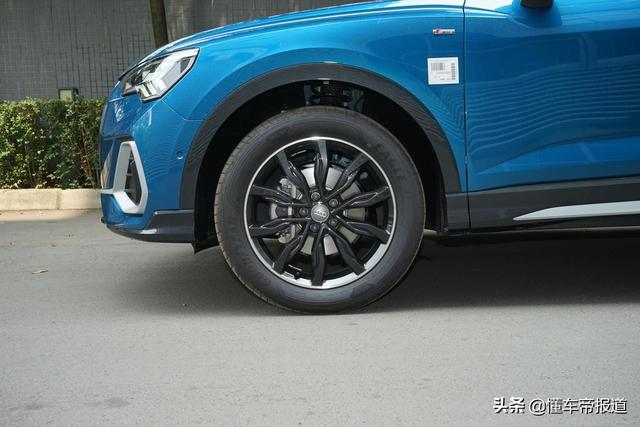
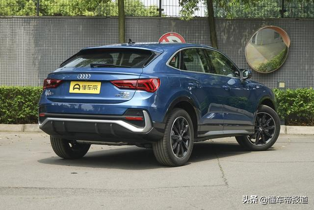
当然，作为轿跑SUV，奥迪Q3轿跑版最大亮点在于车侧，采用了“掀背式”车顶造型，视觉上更加运动。该车在前翼子板处还加入“S-line”标识，后部采用外扩quattro轮拱，加之比奥迪Q3更低的肩线，降低了车身的视觉焦点并增强了运动感。车身尺寸上，新车的长宽分别为4518/1843/1573毫米，轴距为2680毫米，车身长度比奥迪Q3运动外观长23毫米，车顶高度降低了43毫米，轴距数据完全一致。
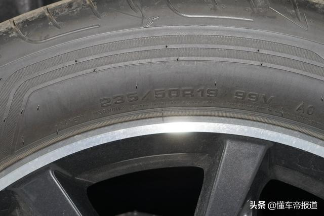
实拍车型采用一套19英寸熏黑多辐轮辋，搭配固特异规格为235/50 R19的轮胎，整体比较注重舒适性。
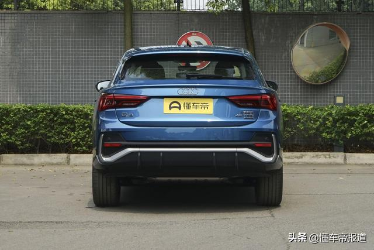
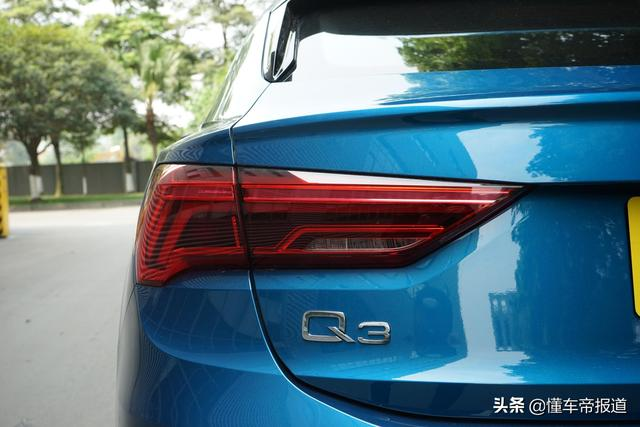
得益于掀背式车尾造型，其尾部层次更加分明，下方采用类似扩散器式的下包围进一步增强了运动感；奥迪S-line专有的设计元素，与前保险杠设计相呼应。
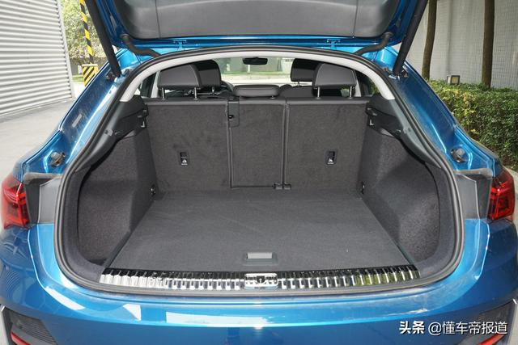
尾厢内部整体比较平整，并拥有双层卡槽；掀背式尾门便于行李厢物品的取放，其后备厢容积为450升，后排座椅支持40/20/40比例放倒，后备厢整体容积可拓展至1400升。
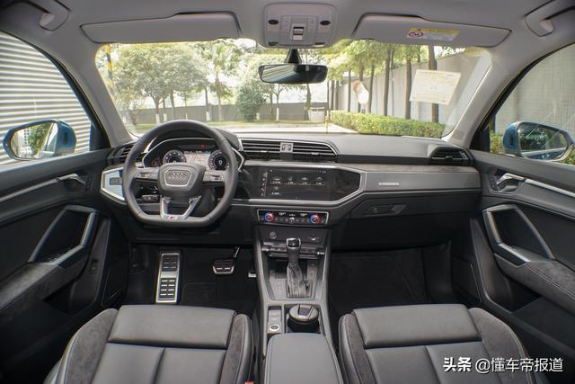
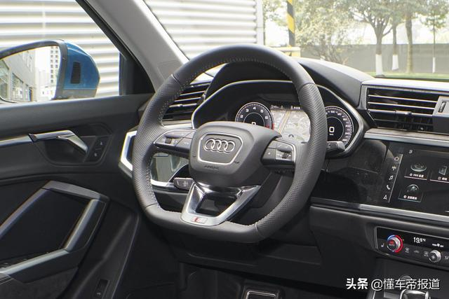
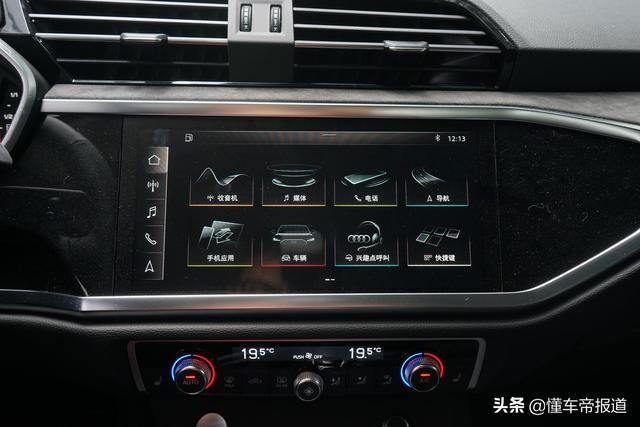
内饰方面，新车采用奥迪最新的家族式设计，整体与现款奥迪Q3基本一致。不规则造型的中控台层次感分明，其配备了8.8英寸/10.1英寸触控式中控大屏，匹配奥迪最新一代MMI人机交互、信息娱乐互联系统。顶配车型配备奥迪connect互联科技，可通过4G高速网络提供在线地图更新、myAudi、新闻、城市生活、交通违章、道路限行、航班信息、天气等信息，并直接显示在导航地图上。
奥迪智能手机接口支持苹果和安卓两种系统的手机，并可以在MMI显示屏上操作Carplay或CarLife。
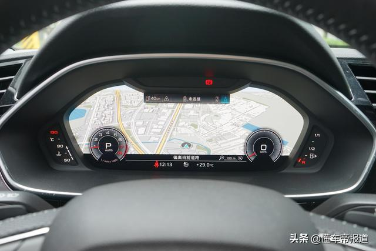
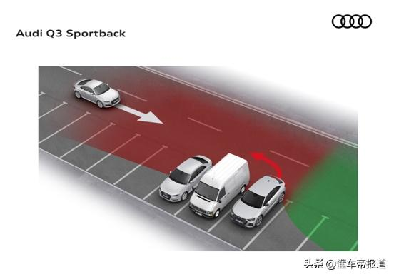
该车还提供10.25英寸/12.3英寸MMI虚拟座舱（全液晶仪表盘），支持全地图导航模式，提升内饰科技感及驾驶便利性。整车还支持带停走功能的自适应巡航控制、开门警示、后方通行警示、陡坡启动辅助、360度全景影像、陡坡缓降控制等主动安全驾驶辅助功能。
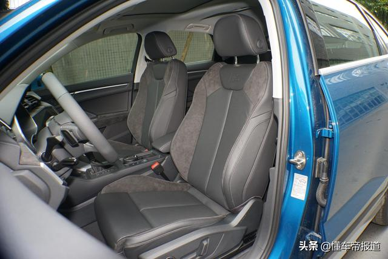
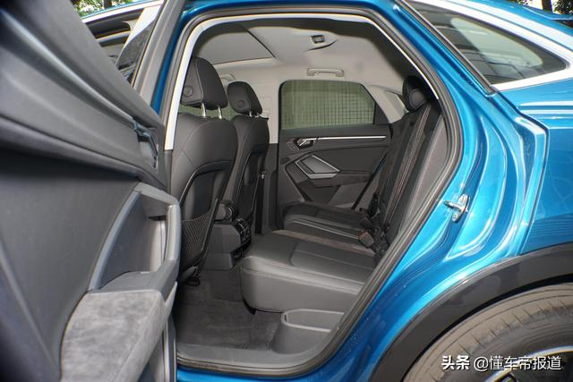
奥迪Q3轿跑全系标配环境氛围灯、带有“S”浮雕徽标的运动座椅并采用对比色条及对比色缝线装饰，可选9种座椅颜色搭配，标配Perlnappa（珠光纳帕真皮）和Alcantara（类似于翻毛皮）组合的座椅，可选配Milano（米莱诺）真皮和Alcantara组合的座椅，并采用打孔设计。
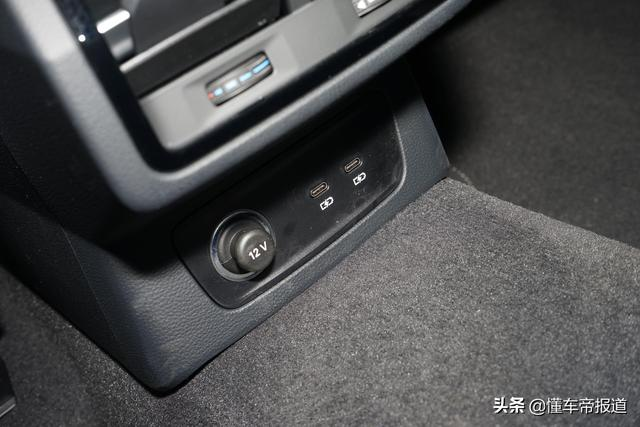
前排座椅支持多向电动调节，后排座椅支持40/20/40比例放倒，并且后排还配备空调出风口以及USB Type C充电接口以及12伏电源接口。新车还配备了15个扬声器的丹麦B&O音响系统。
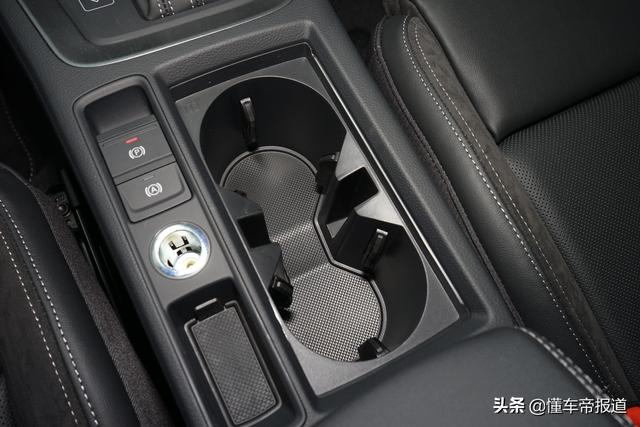
动力部分，奥迪Q3轿跑提供两款发动机多种动力组合可选：
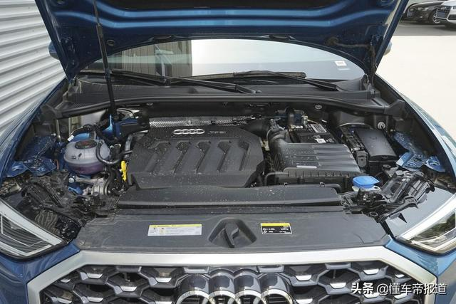
35TFSI搭载EA211 1.4TFSI燃油直喷涡轮增压发动机，最大功率110千瓦，最大扭矩250牛·米；
40TFSI搭载第三代EA888 2.0TFSI燃油直喷涡轮增压发动机低功率版，最大功率137千瓦，最大扭矩320牛·米；
45TFSI搭载第三代EA888 2.0TFSI燃油直喷涡轮增压发动机高功率版，最大功率162千瓦，最大扭矩350牛·米；
全系标配7速S-Tronic湿式双离合变速箱（DQ381），顶配车型提供越野、舒适、自动、动态、高效五种驾驶模式可选。奥迪Q3轿跑前悬架采用麦弗逊式结构，后悬架为多连杆式设计，并采用簧筒分离设计，不仅降低了地面对车辆的冲击，还更少的侵占行李舱的空间。
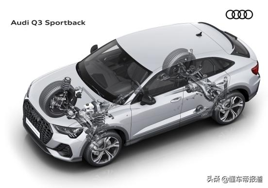
奥迪Q3轿跑45TFSI quattro搭载最新一代奥迪横置发动机平台四驱系统，核心部件是安装在后桥上的电控液压多片离合器，历经五代产品的发展，其重量较上一代减轻1.5kg；通过离合器的结合，可实现0-100%前后桥扭矩的灵活分配，在保证良好的通过性的同时，也提升了车辆的极限稳定性，为驾驶员提供更多的驾驶乐趣。在高速过弯时，quattro四驱系统通过对弯道内侧车轮施加制动力，同时分配更多驱动力到弯道外侧车轮，使转弯的车身姿态更加稳定。
简评：
整体来看，奥迪Q3轿跑版主要变化就在于采用了掀背式车身以及运动化的细节，内部整体配置也非常丰富，这也与其“轿跑”身份相契合。在奥迪Q3之外，它的推出为该车系增加了一款更具“运动范”的车型，充分满足用户多样化的个性需求。用户在选车时也可以根据自身的实际需求，追求简单实用选奥迪Q3，追求造型上的运动和个性化选择Q3轿跑版。